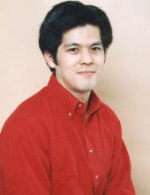

|  |
Katsumi Toriumi is a Japanese voice actor. He works at Production Baobab. He performed with other voice actors on the ablum Everybody's Chirstmas.
|
|---|
| |
Harrison | Pokemon | Harrison is a rival of Ash Ketchman. He is from the Hoenn region. He is quite independent, quick-witted and confident. Harrison encouraged others to do their best. |